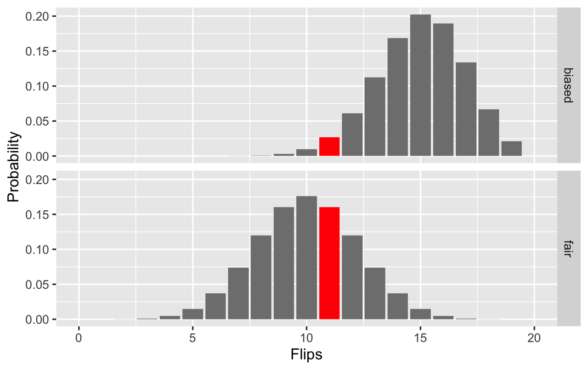

graph02
Fair or Biased Coin
To test whether a coin is fair, we perform a statistical experiment. Maybe this coin comes up heads 75% of the time? While we could flip it once, either event is rather likely. No, to test if a coin is biased, we must several times before we provide convincing statistical evidence of bias.
This is a job for Bayesian statistics We choose to flip our suspect coin 20 times, with the result that 11/20 of the flips are heads. With this data, we use Bayes' rule: $$ P(A|B) = \frac{P(B|A) P(A)}{P(B)} $$
library(tidyverse) ggplot(mtcars, aes(wt, mpg)) + geom_point() n <- 0:20 color <- rep("grey50", length(n)) color[12] = "red" df <- tibble(n = n, fair = dbinom(n, 20, .5), biased = dbinom(n, 20, .75), color = color) %>% pivot_longer(c("fair","biased")) ggplot(df) + xlim(min(n), max(n)) + geom_col(aes(x = n, y = value, fill = color)) + facet_grid(name ~ .) + scale_fill_manual(values = c("grey50", "red")) + labs(x = "Flips", y = "Probability") + theme(legend.position = "none") + ggsave("fair_bias_coin.png")